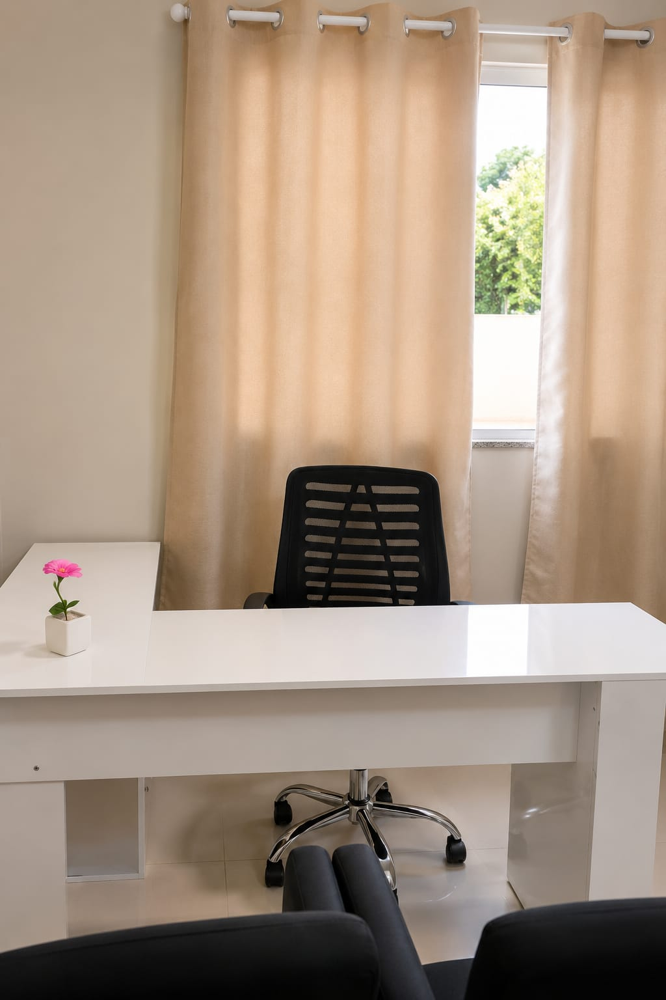
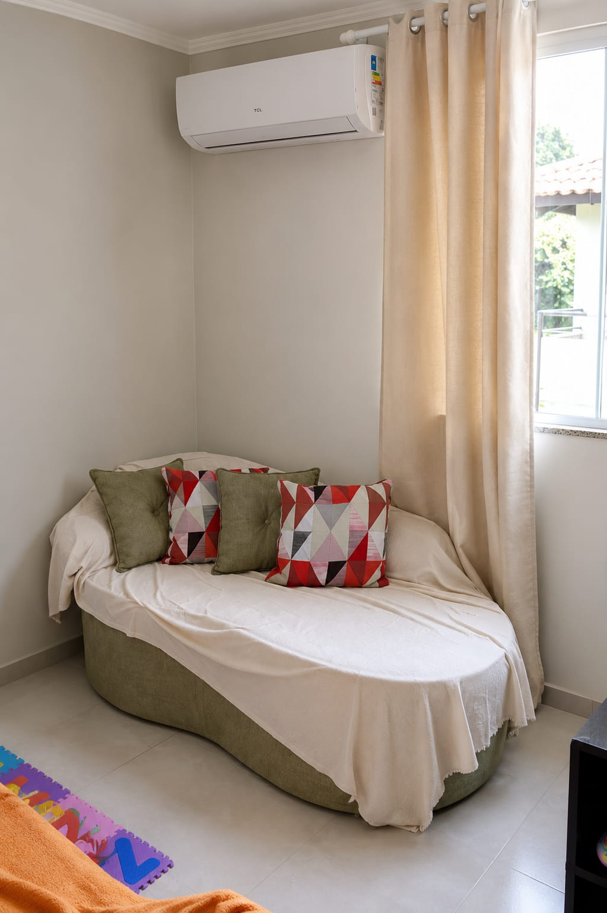
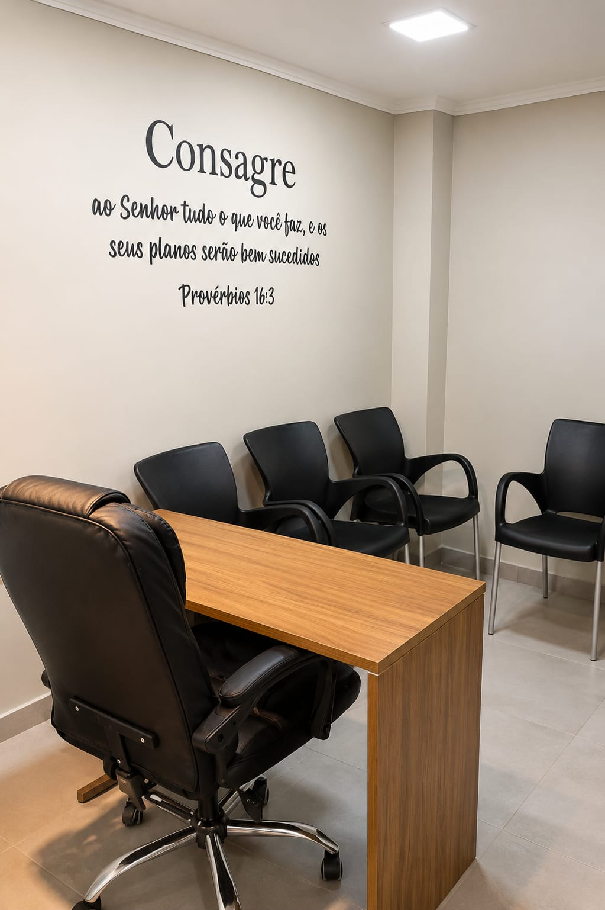
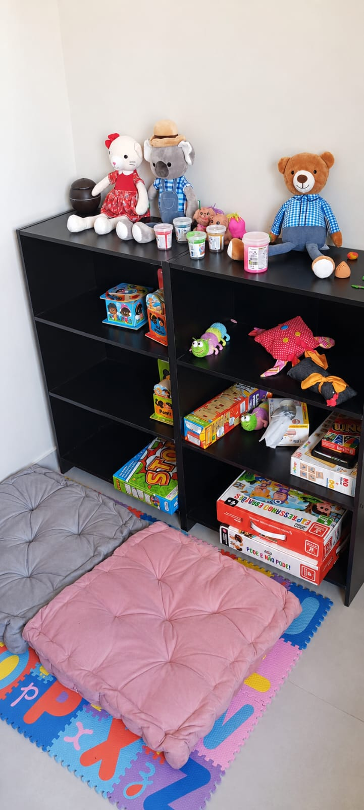

Atendimento para crianças, adolescentes, adultos, idosos e famílias, com ética, humanização e prática baseada em evidências. Presencial em Saquarema (RJ), online para todo o Brasil e atendimento domiciliar.

Algumas situações vividas por crianças, famílias e adultos que costumam trazer pessoas até a clínica.
Suspeitas ou diagnósticos de TEA, TDAH e outras condições do neurodesenvolvimento trazem dúvidas para a família. A avaliação e o acompanhamento ajudam a compreender e a caminhar com mais segurança.
A rotina de cuidado com crianças neurodivergentes pode ser intensa. O acompanhamento oferece escuta e suporte também para quem cuida.
Reconhecer e elaborar expectativas faz parte da jornada de muitas famílias e merece um espaço de acolhimento, sem julgamentos.
Dificuldades de interação, manejo das emoções e do comportamento podem ser compreendidas e trabalhadas no processo terapêutico.
Medos, preocupações frequentes e inquietação na infância merecem atenção e um olhar cuidadoso da psicologia.
Diferenças no desenvolvimento podem ser investigadas na avaliação neuropsicológica, que orienta os próximos passos da família.
Adultos que descobrem ou convivem com o autismo encontram na clínica um espaço para compreender e reconstruir a própria identidade.
Atendimento com técnica, ética e acolhimento para cada momento da vida
Processo detalhado de investigação das funções cognitivas, emocionais e comportamentais, que auxilia na compreensão de TEA, TDAH e outras condições do neurodesenvolvimento.

Atendimento para crianças, adolescentes e adultos com a abordagem da Terapia Cognitivo-Comportamental, incluindo intervenção em ABA quando indicado. O trabalho com o público infantojuvenil envolve e apoia também a família, com orientação parental.

Um espaço de escuta para o casal compreender padrões, melhorar a comunicação e cuidar da relação, com mediação profissional e sigilo.
Na clínica, em Saquarema (RJ), com espaço preparado para crianças, adolescentes e adultos.
Para todo o Brasil e para brasileiros que moram no exterior, conforme as resoluções do CFP.
Para pessoas com dificuldade de locomoção, com foco em reabilitação, incluindo o público idoso.
Conheça a estrutura da clínica, preparada para receber você e sua família.

A Clínica Catojo de Neurodesenvolvimento nasceu da realização de um sonho familiar. O idealizador desse projeto foi Marcio, que sempre acreditou na importância de criar um espaço onde pessoas e famílias encontrassem acolhimento, respeito e cuidado humanizado.
Com a formação das psicólogas Adriana Catojo e Lorena Catojo, esse sonho ganhou forma e se transformou em realidade. A união entre o propósito da família e o compromisso profissional deu origem a uma clínica dedicada ao desenvolvimento humano e ao cuidado integral.
Ao longo da nossa trajetória, compreendemos que o cuidado vai muito além do paciente. Pais, mães e responsáveis também enfrentam desafios, dúvidas e sobrecarga emocional. Por isso, nossa missão é acolher toda a família, oferecendo orientação, suporte e um atendimento baseado na escuta, na ciência e na empatia.
Na Clínica Catojo de Neurodesenvolvimento, acreditamos que cada pessoa possui uma história única e que, quando a família também é cuidada, o processo terapêutico se fortalece, favorecendo o desenvolvimento, o bem-estar e uma melhor qualidade de vida.
Mais do que um espaço, um lugar de cuidado.
Psicóloga Lorena Gomes Barcelos Catojo | CRP 05/73109
Psicóloga Adriana Cordeiro de Andrade Catojo | Neuropsicóloga | CRP 05/84061
Você chama no WhatsApp ou envia o formulário. Entendemos a sua necessidade e explicamos como a clínica funciona.
Uma primeira conversa para compreender a demanda, esclarecer dúvidas e alinhar as expectativas sobre o processo.
Os objetivos são definidos em conjunto, respeitando a singularidade de cada pessoa e de cada família.
Sessões periódicas com reavaliação contínua, sempre com sigilo, ética e prática baseada em evidências.
A abordagem teórica que orienta o trabalho da clínica
Psicólogo e pessoa atendida trabalham juntos na compreensão de pensamentos, emoções e comportamentos.
Utiliza técnicas reconhecidas e estudadas cientificamente pela psicologia, com rigor técnico e ético.
As metas são construídas em conjunto e revistas ao longo do processo, respeitando o tempo de cada pessoa.
Cada processo terapêutico é singular. Os resultados variam de pessoa para pessoa e não podem ser previstos ou garantidos, conforme o Código de Ética Profissional do Psicólogo.
A primeira conversa é uma entrevista inicial para compreender a sua necessidade, esclarecer dúvidas e explicar como funciona o acompanhamento. A partir dela, os objetivos do trabalho são alinhados em conjunto.
A clínica atende de três formas: presencial, em Saquarema (RJ); online, para todo o Brasil e para brasileiros que moram no exterior, conforme as resoluções do CFP; e domiciliar, para pessoas com dificuldade de locomoção, com foco em reabilitação.
É um processo de investigação das funções cognitivas, emocionais e comportamentais, realizado com entrevistas, testes e observação clínica. Ela auxilia na compreensão de condições como TEA e TDAH e termina com uma devolutiva, em que os resultados e as orientações são apresentados à família ou à pessoa avaliada.
Sim. O sigilo é um dever profissional previsto no Código de Ética Profissional do Psicólogo. Tudo o que é compartilhado nas sessões é confidencial, dentro dos limites previstos em lei.
Os atendimentos são particulares. Quando aplicável, a clínica fornece a documentação para que você verifique junto ao seu plano de saúde a possibilidade de reembolso.
Os valores são informados de forma reservada, no contato individual, conforme a orientação do Conselho Federal de Psicologia. Antes do início do acompanhamento, todas as condições são apresentadas com clareza.
Chame no WhatsApp ou preencha o formulário ao lado. Retornamos em horário comercial. Este canal não substitui atendimento de urgência: em situação de crise, ligue 188 (CVV) ou procure o pronto atendimento mais próximo.
Entre em contato com a Catojo e conheça o trabalho da clínica. Será um prazer receber você e sua família.
Chamar no WhatsApp